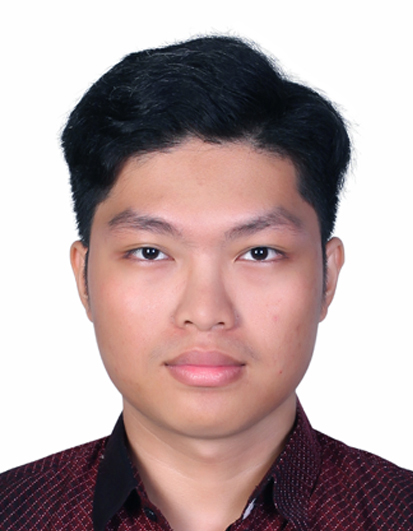
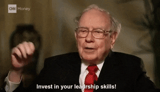
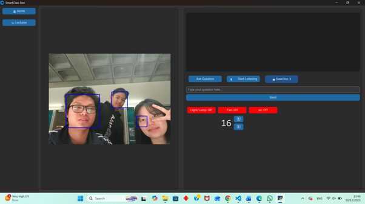
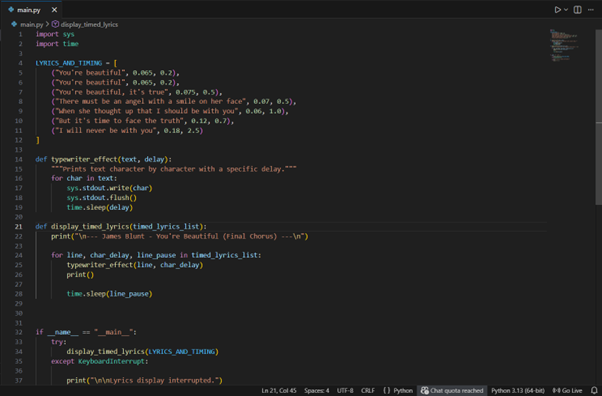
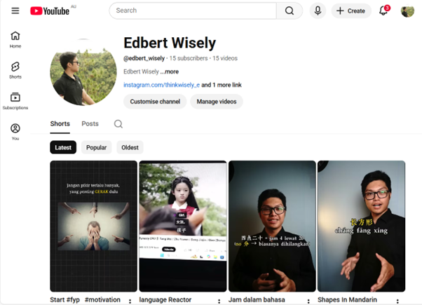

| Name | : | Edbert Wisely |
|---|---|---|
| Student ID | : | 14722262 |
| Gender | : | Male |
| Dept | : | Information Technology |
| D.O.B | : | 2007-11-04 |
"The best investment you can make is in yourself."
- Warren Buffet

I am Chinese-Indonesian (Chindo). I was born and raised in Medan, Indonesia. Although growing up surrounded by Indonesia culture, I also practice Chinese traditions such as speaking Hokkien and celebrating Chinese New Year.
A landmark that represent my country of birth is Borobudur Temple.
UTS College
Diploma of Information Technology
2025 - Present
Carnegie School
Senior High School Level
2022 - 2025
Methodist 3
Junior High School Level
2019 - 2022
Methodist 3
Junior High School Level
2013 - 2019
Head of Education, Student Council (2022 – 2023)
Tutor (Self-Employed) (2023 – Present)
Founder, ETOZ Organization (2024 – Present)
Domino's Delivery Driver (2025 - Present)
My hobby is to create mini application that can solve real world problem. The above image shows a program that is used for smart class application with AI features, and physical devices access controls. In addition, I have ever created Arduino project for water filtration project. Furthermore, I'm currently developing UTS community project. Developing mini apps to solve a real world problem is definitely my hobby.

I love to try everything, especially when it comes to challenges. Personally, I think challenges have filled up my entire life. I've joined several competitions from math and tech to even speech and chess competitions. In addition, I also learnt how to speak in different languages. Those experiences not just simply enrich my life but instead they are a part of me.
Education has been an important aspect in my life. Although education is not the only way to achieve success, I always believe that education is the foundation for people to change their lives. Furthermore, I love technologies, that's why I'm interested in edu-tech field.
I like to question most of the things. I am eagerly to know what’s happening behind every working system. Personally, I love to see things in more than one perspective. I’m happy to train my cognitive and critical thinking with those things.
I always believe that work with what you have and improve it instead of waiting for perfection. For instance, I’ve built up a small organization named “ETOZ” with the purpose to help students in education with technologies. I love the quote from Warren Buffet “The best investment you can make is in yourself”, which perfectly aligns with what my perspective.
I always believe education as foundation towards success, so I am enthusiast in teaching people on different types of knowledge. I've ever taught people for Math and Science subjects, tutored people in solving coding problem and helped people in learning language.
I knew coding on my year seven. One third of my life has been surrounded by coding. I start with Java and move to Python and web dev. During this seven years period, I've tried a lot of things such as Arduino (Robotic). I'm passionate in coding, aiming to solve real world problems with technologies. I wish to use this skill to enhance public's life quality.
Love to try everything makes my life moves fast, thereby multitasking is an essential skill to address this fast-paced life. I can freely switch between different tasks at the same time, while ensuring the quality of my works. Multitasking increase my productivity so that I can spend more time to try more and more things.
I've frequently lead several events such as Kathina and Waisak devotional services. In addition, I am actively participated in team collaboration in various school events such as becoming an MC in YAWP (You're my wonderful parents) event. I personally believe that one requires team and collaboration to solve problems, not relying on solo-fighter mode.

I am passionate in building my own company, where enterpreneur skill is compulsory. I am learning on how to plan, launch, and manage small-scale projects. In the future, I wish I can develop critical thinking to help me better take decision for a company. Turning creative ideas into practical application is my future goal.
To achieve financial freedom, investment is mandatory. I'm trying to learn how to apply the most suitable strategies in investing. I would love to understand human's behaviour to market perspective, as well as macro and micro economy impacts on market behaviour. I wish I can learn more investing skill through online resources or financial books.
In this modern era, digital identity is accounting more attention every year. In able to well presenting myself, creative and high quality of content plays a crucial role. So, content creation is the skill that I am currently pursuing. I am learning color grading, content structuring, and content delivering. I wish to master this skill to build up a strong digital identity for myself.
As the hottest topic discussion in these few years, AI (Artificial Intelligent) and ML (Machine Learning) has drawn my attention. I believe that future belongs to people who can use AI as their tools. Therefore, I am interested in learning how to develop, train, and implement an AI model.
